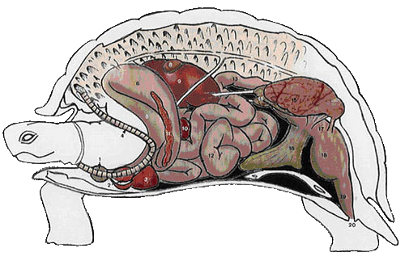
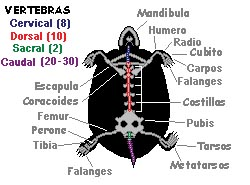
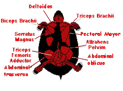
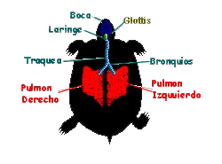
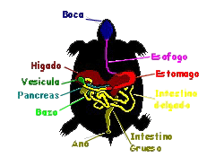
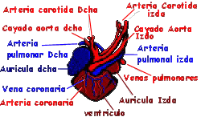
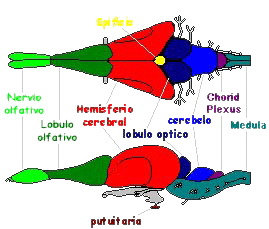

|
ANATOMÍA
• Caparazón
• Sistema óseo
• Sistema muscular
• Sistema respiratorio
• Sistema digestivo
• Sistemas reproductor y excretor
• Sistema circulatorio
• Sistema nervioso y sensorial
DISPOSICIÓN DE ÓRGANOS DE UNA TORTUGA

|
1.
Tiroides
2. Aurícula
3. Ventrículo
4. Tráquea
5. Esófago
6. Estómago
7. Pulmón |
8.
Vesícula biliar
9.
Hígado
10. Bazo
11. Páncreas
12. Intestino
delgado
13.
Colon
14.
Testículo |
15. Riñón
16. Vejiga
urinaria
17.
Coprodeum
18.
Urodeum
19.
Proctodeum
20. Abertura
cloacal |
Caparazón
Es una característica única y la mas reconocible de las
tortugas. El diseño ha cambiado poco en casi 200 millones de
años.
El caparazón de la tortuga rodea y protege su cuerpo. Esta
formado por unos 60 huesos. Se divide en dos partes
principales: un espaldar o caparazón propiamente dicho, que
se sitúa dorsalmente, derivado de la unión, y posterior
fusión de las costillas y vértebras con elementos óseos
originados en la dermis, todo ello recubierto exteriormente
por estructuras de queratina, originadas de la epidermis,
llamadas escudos (se dice que pueden ser indicativos de la
edad del individuo, al ir aumentando su número con el
crecimiento del animal; pero este no es un método preciso en
la mayoría de las especies, al estar sujeto a los posibles
cambios metabólicos que pueda sufrir el animal; sin embargo,
los escudos sirven para identificar diferentes especies
similares entre sí); y un peto o plastrón, situado
ventralmente, formado a partir de la fusión de los huesos de
la cintura escapular (la clavícula y la interclavícula) y
los gastralia. El plastrón se une al caparazón mediante
sendos puentes óseos laterales.
El plastrón
(izda) y el espaldar (dcha) de una tortuga de caja. El área
entre los escudos pectorales y abdominales del plastrón es
la bisagra.
El espaldar de la mayoría de las tortugas tiene cerca de 50
huesos, y en la mayoría de las tortugas, los huesos están
cubiertos por 26 escudos. El plastrón de la mayoría de las
tortugas tiene 11 huesos y 12 escudos.
Existen multitud de modificaciones evolutivas en el caparazón
de las tortugas. La función protectora de un gran caparazón
que actúe como dura fortaleza, está representada en su forma
más pura en las tortugas terrestres gigantes (Testudinidos),
donde su peso se ha reducido merced a un adelgazamiento de
sus huesos, siendo los escudos los verdaderos artífices de
la dureza.
Otras tortugas han reducido a la mínima expresión los huesos
del caparazón tal como los conocemos. En su lugar presentan
una correosa piel (la tortuga laúd, cuyo caparazón no
presenta escudos óseos, sino que está formado por pequeñas
plaquitas óseas incrustadas en la piel, la cual presenta una
textura oleosa).
Otra adaptación evolutiva es la presencia de una bisagra o
charnela, utilizada como herramienta de protección o para
evitar la deshidratación del animal, y que, según el género,
está presente en la región craneal (Sternotherus), en la
región caudal (Kinixys) o en ambas regiones (Kinosternon)
del plastrón; también existen tortugas que presentan la
bisagra en el espaldar, las tortugas articuladas africanas.
Algunas tortugas no han llegado tan lejos, presentando, a lo
sumo, cierto grado de flexibilidad, no pudiendo cerrar sus
caparazones, presentando uniones ligamentosas entre el
espaldar y el peto, que les facilita la puesta de sus
frágiles huevos (Cyclemys, Notochelys).
El caparazón de la tortuga, tiene una notable capacidad de
regeneración, si una parte es dañada por depredadores,
fuego, u otra causa, las áreas sanas continuarán creciendo y
el daño se cura.Al crecer una tortuga, una nueva capa de
queratina se añade por debajo de la existente. En ciertas
especies, las nuevas capas forman anillos prominentes de
crecimiento. El número de anillos de crecimiento no nos dice
la edad de la tortuga. Si las condiciones son favorables, se
pueden formar varios anillos en una estación.
La piel esta también recubierta de escamas.
Sistema
óseo
El hueso es tejido fino conectivo mineralizado. Dentro de la
mayoría de los huesos hay un área esponjosa suave conocida
como tuétano. Las células rojas y blancas de la sangre se
producen en el tuétano de algunos huesos (fémur).
Hay dos partes en el esqueleto de la tortuga, el exoesqueleto
(caparazón y plastrón) y el endoesqueleto (huesos internos).
El endoesqueleto lo consideramos dividido dos partes, el
esqueleto axial (cráneo, vértebras y costillas) y el
esqueleto apendicular (los huesos y las fajas de los
miembros). Las tortugas son únicas porque sus fajas pectoral
y pélvicas están dentro de su jaula de costillas. Esta
transformación ocurre durante el desarrollo embrionario. Las
tortugas tienen generalmente entre 40 y 50 vértebras. Las
costillas de la tortuga se convierten en las placas costales
del caparazón. Las costillas se unen con las placas de la
concha. Las patas de la tortuga se proyectan hacia los lados
del cuerpo debido al plastrón.
Las tortugas no tienen dientes, en su lugar tienen un pico
córneo.

Principales estructuras:
• Cráneo y mandíbula: Son los huesos de la cabeza, realmente
esta constituido por vario huesos unidos, el cráneo protege
el cerebro.
• Vértebras Cervicales: Huesos del cuello. Las tortugas tienen
ocho. La mayoría de ellas, pueden retraerlos bajo el
caparazón para proteger mejor el cuello.
• Vértebras dorsales: Hay diez vértebras dorsales. Están
unidas a las placas del caparazón. Una costilla sale
torácica de cada vértebra dorsal.
• Húmero: El hueso superior de la pata delantera.
• Radio y cúbito: Huesos de la pata delantera. El cubito es el
más grande de los dos.
• Carpos: Los huesos de la muñeca.
• Falanges: Los huesos del dedo del pie. El extremo de los
huesos forma garras córneas.
• Omóplato: El hueso más largo recto de la faja pectoral.
• Coracoides: Otro hueso de la faja pectoral.
• Fémur: El hueso del muslo. Produce la mayoría de las células
rojas y blancas de la sangre.
• Peroné y tibia: Huesos de la pata. La tibia es más grande y
gruesa.
• Tarsos : Huesos del tobillo.
• Metatarsos: Huesos de los pies.
Sistema Muscular
El sistema muscular de una tortuga no muy diferente del de
otros vertebrados. Los músculos están formados por células
largas que son capaces de contracción. Hay 3 tipos de tejido
muscular: músculo esquelético, cardiaco y liso.
Los músculos esqueléticos están unidos a los huesos por los
tendones. Pueden ser contraídos muy rápidamente y son
responsables de la mayoría del movimiento voluntario.
El músculo cardiaco forma la pared del corazón.
El músculo liso se encuentra en las paredes de la zona
digestiva, arterias, vejiga, y otros órganos. Los músculos
lisos son controlados por los nervios del seperate del
músculo esquelético y son involuntarios. La tortuga no puede
controlar voluntariamente sus acciones y no está
generalmente enterada de su movimiento.

Las principales estructuras son:
• Deltoideo: Músculo del hombro. Movimiento delantero del
brazo.
• Bíceps: Músculo del brazo superior. Unido en un extremo al
coracoides y en el otro el radio y cubito. Dobla el
antebrazo.
• Tríceps: Músculo del brazo superior. Contrapartes del
bíceps. Amplía y rota el brazo.
• Serratus Magnus: Unido al caparazón y el coracoides. Amplía
y mueve el brazo al revés.
• Pectoral mayor: Músculo del pecho. Tira del brazo hacia
abajo.
• Pelvim de Attrahens Se une al plastrón y la faja pélvica.
Sostiene la faja pélvica en su lugar.
• Aductor femoris: Extiende el muslo.
• Tríceps Abdominl oblicuo y transversal: Unido al plastrón.
Puede estar implicado en la respiración.
Sistema Respiratorio
El oxígeno es necesario para el metabolismo, durante el cual
se produce el bióxido de carbono. El trabajo del sistema
respiratorio es coger oxígeno y eliminar el bióxido de
carbono. Las tortugas tienen pulmones y deben respirar
oxígeno del aire. Incluso las tortugas del mar, que son los
reptiles más acuáticos, deben emerger cada cierto tiempo.
Las tortugas marinas también inflan sus pulmones para
mantenerse a flote y tomar el sol.
Algunas tortugas, pueden intercambiar los gases por áreas de
su piel, cloaca y garganta. La cantidad de oxígeno obtenida
es baja, pero es la suficiente para mantenerlas con vida
durante épocas de baja necesidad de oxígeno (hibernación).
La inspiración/expiración se realiza a través de las fosas
nasales, no siendo fisiológica la respiración a través de la
boca. El aire inspirado penetra en la tráquea a través de la
glotis, la cual se encuentra a nivel caudal de la base de la
lengua. La mayoría de las tortugas presentan un corto tubo
traqueal, en comparación con otros reptiles, debido a que la
tráquea se bifurca muy pronto, a nivel de los territorios
craneales del cuello, en dos bronquios principales. Esto
permite respirar al animal cuando presenta la cabeza
escondida teniendo el cuello replegado.
Los pulmones presentan su cara dorsal adosada a la superficie
ventral del caparazón, mientras que la cara ventral limita
con una lámina fibromuscular que separa los pulmones del
paquete digestivo. Esta lámina presenta ligamentos que la
fijan al hígado, estómago e intestino, pero no es un
diafragma.
En comparación con los mamíferos, y aunque el volumen pulmonar
es grande, la superficie respiratoria es menor, por ser
animales con un bajo ritmo metabólico.
En los procesos respiratorios intervienen varios grupos
musculares, ayudados por movimientos de las extremidades y
de la cabeza. Sin embargo, no presentan una presión negativa
intratorácica, lo cual posibilita que la respiración no se
vea afectada ante graves traumatismos del caparazón que
expongan los pulmones al exterior.
Dos cosas a tener en cuenta son: La extraordinaria capacidad
de las tortugas para mantener largos períodos de apnea. Y
que la estructura de su aparato respiratorio favorece la
permanencia y el estancamiento de secreciones y cuerpos
extraños dentro de los pulmones, por ello los problemas
neumónicos sean frecuentes y con consecuencias fatales.

Principales estructuras:
• Boca y faringe: Cavidades dentro del cráneo por donde entra
el alimento, y el aire.
• Glotis: Conecta la faringe y la laringe. Se cierra cuando la
tortuga se sumerge o al comer.
• Laringe: El extremo superior del conducto respiratorio. Está
conectado con la glotis y conduce a la tráquea.
• Tráquea y bronquios: La tráquea es un tubo hueco largo entre
los pulmones y la laringe, se divide en dos bronquios. Un
bronquio entra en el pulmón izquierdo, el otro en el
derecho.
• Pulmones: Órganos grandes, rojizos, esponjosos que están
debajo del caparazón. El aire pasa del bronquio a tubos más
pequeños en los pulmones llamados bronquiolos. Los
bronquiolos son progresivamente más pequeños hasta que
terminan en un racimo pequeño de sacos de aire, llamados
alvéolos, y en ellos es donde se intercambian los gases. El
Oxígeno del aire pasa a la sangre, mientras que el bióxido
de carbono pasa de la sangre al aire.
Sistema Digestivo
El aparato digestivo de las tortugas comienza en la boca, la
cual no presenta dientes sino un duro pico corneo con el
cual despedazan las piezas. La deglución se lleva a cabo
gracias al mucus producido por las glándulas salivares y a
la larga y ancha lengua.
Ciertas tortugas han desarrollado estructuras bucales que
utilizan en provecho de su alimentación, bien sea en sus
técnicas de caza, como la tortuga aligator (familia
Chelydridae), que posee un pequeño apéndice vermiforme sobre
la lengua con capacidad de distensión al llenarse de sangre
y de moverse por medio de determinados músculos, el cual
utiliza como señuelo de pesca. O bien sea para obtener
alimentos, como algunas especies comedoras de moluscos
(familia Emídidos, géneros Graptemys y Malayemys). O
comedoras de frutos (familia Emídidos, género Pseudemys,
Cachuga y Batagur) que presentan un paladar secundario con
capacidad para romper las conchas o partir los frutos.
El bolo alimenticio pasa al esófago y, posteriormente, al
estómago por medio de la válvula gastroesofágica. El
estómago está situado en el lado izquierdo de la cavidad
celómica.
El intestino delgado es de escasa longitud, realizándose la
absorción de los nutrientes y del agua, merced a sus enzimas
digestivas y a las secretadas por el páncreas y la vesícula
biliar. Mediante la válvula ileocecal se conectan el
intestino delgado y el intestino grueso. Éste último
presenta un ciego de escaso desarrollo y un cólon con sus
tres porciones (ascendente, transverso y descendente), que
desemboca en el recto, y éste en la cloaca (a nivel del
coprodeum, donde se retienen las heces antes de su
expulsión).
El páncreas es un órgano de color rosa-anaranjado pálido,
situado junto al bazo o alojado entre los mesenterios del
duodeno. A través de un corto conducto, drena el jugo
pancreático al duodeno. Presenta funciones endocrinas y
exocrinas. El páncreas puede estar asociado al bazo formando
el esplenopáncreas.
El hígado es un órgano voluminoso, que puede estar totalmente
pigmentado de melanina. Está situado ventralmente, ocupando
completamente de un lado a otro la cavidad celómica. Entre
los dos lóbulos mayores se encuentra la vesícula biliar.
Para su fijación en la cavidad celómica presenta puntos de
sujeción con el corazón y el estómago.

Las principales estructuras son:
• Boca: Cavidad dentro del cráneo. El alimento, el agua, y el
aire entran en el cuerpo a través de la boca.
• Esófago: Tubo largo, estrecho que conecta la boca con el
estómago.
• Estómago Órgano digestivo tubular. El estómago es mucho mas
ancho que el esófago o los intestinos. Las enzimas y los
ácidos de glándulas en la pared del estómago descomponen el
alimento. Las enzimas son ayudadas por el movimiento de los
músculos del estómago que baten el alimento alrededor.
• Hígado: El órgano más grande del cuerpo de la tortuga. Es un
órgano marrón rojizo grande. Entre otras las cosas, el
hígado produce la bilis.
• Vesícula biliar: órgano verdoso pequeño situado detrás del
hígado. Mantiene y vierte la bilis del hígado en el
intestino pequeño.
• Páncreas: glándula delgada y pálida, situada al lado del
intestino pequeño. Produce las enzimas que lanza en el
intestino pequeño vía conducto pancreático.
• Intestino delgado: Tubo largo, en espiral que en un extremo
se une al estómago y en el otro al intestino grande. Los
nutrientes del alimento son absorbidos en el cuerpo por las
vellosidades intestinales.
• Intestino Grueso Conectado con el intestino delgado. La
función principal de este órgano es reabsorber el agua de
los residuos del sistema digestivo. En el pueden vivir
grande gran cantidad de bacterias. Estas bacterias pueden
incluir E. coli y salmonela. que no son dañinas para la
tortuga, pero pueden causar enfermedades en los seres
humanos.
• Ano Extremo de la zona digestiva, por donde se expulsan las
heces.
Sistemas reproductor y excretor
El aparato urinario está compuesto por dos riñones situados en
la región ventrocaudal del caparazón. De los riñones parten
sendos uréteres que desembocan en la vejiga urinaria, a
nivel del cuello de ésta. La vejiga es bilobulada y presenta
una pared con gran capacidad de distensión. En los procesos
de micción, la orina (ácido úrico y sales de uratos) llega a
la cloaca a través del urodeum.
El aparato genital presenta las gónadas (testículos u ovarios)
localizados cranealmente a los riñones. Los machos presentan
un pene extensible de gran desarrollo, liso y de coloración
oscura, que no presenta función de micción. Para la
eyaculación, el pene presenta un surco seminal por donde
sale el semen. Cuando no está erecto, yace ventromedialmente
en el proctodeum, sobre el suelo de la cavidad celómica. Las
hembras, presentan unos largos oviductos donde tiene lugar
la formación de las envolturas del huevo.
La fertilización es interna para todas las tortugas. Durante
el acoplamiento, el esperma se pasa del macho a la hembra.
La fertilización del huevo se realiza en los oviductos de la
hembra. En algunas especies, la hembra puede almacenarlo por
varios años. Todas ponen los huevos en tierra, y algunas
retornan al punto de nacimiento todos los años.
Las tortugas marinas recorren largas distancias para regresar
a las playas donde nacieron. Algunas hembras de tortugas
marinas pueden poner hasta 400 huevos en varias puestas en
una temporada. Los huevos de tortuga pueden ser coriáceos o
de cáscara dura. Después de poner los huevos, la hembra de
tortuga los cubre con tierra o arena y los abandona. La
hembra no ve el nacimiento y no se toma ningún interés en
cuidarlos. El calor del sol, que calienta la tierra, incuba
los huevos.
Las principales estructuras son:
• Riñones: Órganos compactos, aplanados situados bajo
caparazón. Los riñones son responsables de filtrar la sangre
y de eliminar los residuos tóxicos. Estos residuos se
concentran y se envían a la vejiga como orina.
• Vejiga: Órgano que almacena orina.
• Cloaca: Órgano cilíndrico que se abre al exterior del cuerpo
de la tortuga. Recibe los residuos del intestino y de la
vejiga, y el esperma del macho o los huevos de la hembra.
• Testículos (macho): Produce el esperma. Localizados a los
lados de la vejiga.
• Pene (macho): Mediante él se introduce el esperma en la
hembra durante la cópula.
• Ovarios (Hembra): Órganos reproductores femeninos.
• Oviducto (Hembra): Tubos que conectan los ovarios con la
cloaca. Los huevos que produjeron en los ovarios pasan a los
oviductos. Después de la copula, el esperma masculino llega
a los oviductos y fertiliza el huevo. El huevo entonces
continúa su camino bajando por el oviducto hasta la cloaca.
• Vejiga Urinaria Accesoria: En las hembras, estos órganos
sirven para retener agua, que se utiliza para ablandar la
tierra al cavar un nido.
Sistema Circulatorio
El corazón de las tortugas, al igual que los saurios y los
ofidios, esta formado por dos aurículas y un ventrículo.
La aurícula derecha recibe la sangre desoxigenada que proviene
del seno venoso, al cual ha llegado procedente de la
circulación sistémica. El seno venoso es una cámara situada
sobre la superficie dorsocaudal de la aurícula derecha, que
presenta una pared muscular a través de la cual llega la
sangre drenada por las venas precavas derecha e izquierda,
la vena postcava y la vena hepática izquierda.
La aurícula izquierda recibe sangre desde los pulmones
oxigenada a través de las venas pulmonares izquierda y
derecha.
Al tener un solo ventrículo, éste debe realizar una doble
función, esto es, desde el punto de vista anatómico existe
un único órgano que fisiológicamente trabaja como si fueran
dos. Para ello, presenta tres compartimentos o subcámaras:
Cavum pulmonale, cavum venosum y cavum arteriosum. El cavum
venosum y el cavum arteriosum están conectados mediante un
canal interventricular y reciben sangre procedente de los
atrios derecho e izquierdo respectivamente. El cavum
pulmonale está separado de sus homónimos mediante un pliegue
muscular. El cavum venosum presenta una localización
cráneo-ventral dentro del ventrículo extendiéndose hasta los
dos arcos aórticos, uno izquierdo y otro derecho, que salen
exoventramente desde el ventrículo. A nivel craneal del
canal interventricular se disponen dos válvulas
auriculoventriculares, las cuales ocluyen de forma parcial a
dicho canal durante la sístole auricular; mientras que,
durante la sístole ventricular, evitan que la sangre refluya
desde el ventrículo hacia el atrio. La localización de las
válvulas auriculoventriculares en el canal interventricular,
unido a las contracciones musculares que originan cambios de
presión en el órgano, hace posible que con un solo
ventrículo, las tortugas presenten un completo circuito para
que la sangre fluya entre los diferentes órganos encargados
de su depuración sin mezclarse. Así la sangre de la aurícula
derecha es enviada mediante la sístole auricular hacia el
ventrículo, exactamente al cavum venosum y pulmonale para
luego ir a los pulmones.

Resumiendo,
el oxígeno y los alimentos necesarios para el metabolismo
son transportados a las células por la sangre, que viaja a
través del cuerpo por el sistema
circulatorio. El sistema circulatorio consiste en el corazón,
las arterias, las venas y los tubos capilares. Las tortugas
tienen un corazón con tres cámaras, aurícula izquierda,
aurícula derecha, y ventrículo. El ventrículo esta separado
parcialmente en dos secciones por un tabique incompleto.
Esto reduce la mezcla de sangre venosa y arterial. La sangre
venosa (desoxigenada) procedente del cuerpo entra en la
aurícula derecha. que se contrae y empuja la sangre al
ventrículo. Desde allí va a los pulmones donde el bióxido de
carbono se intercambia por oxigeno. La sangre oxigenada
retorna a la aurícula izquierda del corazón. De ella pasa al
ventrículo y de allí se distribuye al cuerpo por las
arterias y retorna por las venas al corazón.
Sistemas nerviosos y sensorial

El sistema
nervioso (cerebro, médula espinal y nervios) esta compuesto
por las células llamadas neuronas. Las neuronas son las
células largas y especializadas que pueden transmitir
señales. Los nervios llevan impulsos de los órganos
sensoriales al cerebro donde se procesan. El cerebro es el
centro del sistema nervioso. El cerebro de la tortuga es
mucho más avanzado que el de los anfibios. Sin embargo, es
muy primitivo cuando se compara con el de mamíferos o
pájaros.
Del cerebro sale la médula espinal. La médula espinal,
protegida por la espina dorsal y el caparazon, va hasta la
parte posterior de la tortuga. La médula espinal lleva la
información a/y desde el cerebro. Los reptiles tienen doce
nervios. Todas las tortugas responden a las vibraciones,
pero no pueden oír bien. Las tortugas tienen buena vista.
Una membrana transparente cubre cada ojo, protegiendolo
contra la suciedad, arena, y otros objetos. El sentido del
olfato esta muy desarrollado. Las tortugas pueden oler
fuentes del alimento a grandes distancias. El sentido del
gusto de la tortuga va unido al olfato. El caparazon y la
piel de la tortuga son sensibles al tacto.
Partes del cerebro de la tortuga:
• Nervio olfativo: Nervios que conectan la nariz con el lóbulo
olfativo.
• Lóbulo olfativo La parte del cerebro que controla el proceso
de oler. Localizado en el frente del cerebro.
• Hemisferio Cerebral: Area grande que controla los
movimientos, los sentidos, y comportamiento.
• Lóbulos ópticos: Centros importantes en el proceso de la
información de los ojos.
• Cerebelo: Funciones para coordinar los movimientos.
• Médula: Controla funciones autonómicas, tales como
respiración, actividad del corazón, tragando y digestión.
• Cuerpo Pituitario: (también llamado la glándula pituitaria)
Glándula situada en la base del cerebro. Produce y almacena
las hormonas que regulan las actividades del cuerpo de la
tortuga.
|